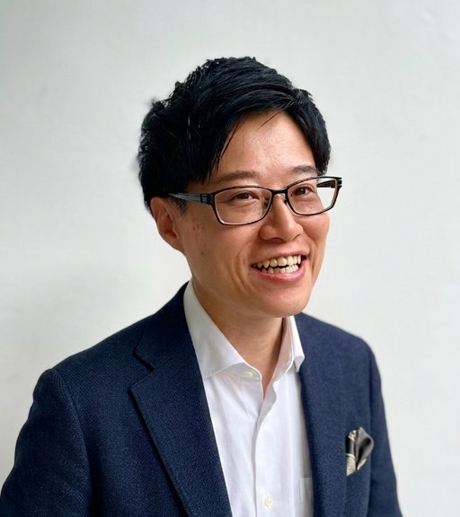

面談・相談記録
録音や文字データから、文字起こし・要約・重要事項を整理。
探偵事務所の、新しいパートナー
相談記録、文字起こし、案件整理、タスク管理、情報共有。
探偵業務の周辺にある、時間のかかる事務作業を
AIと仕組みで効率化します。
MORE TIME FOR
THE WORK THAT MATTERS
調査や相談対応に向き合うために、
まずは、その周辺にある仕事から。
今のやり方を大きく変えずに、
記録から引き継ぎまでを整えます。
録音や文字データから、文字起こし・要約・重要事項を整理。
会話や記録から、担当・期限・対応事項を整理してタスク化。
メール、資料、記録などを、後から探しやすい状態へ整理。
過去案件、対応例、マニュアルを蓄積し、再利用しやすい状態に。
担当者が変わっても、過去の経緯や業務ルールが残る仕組みを。
AIに質問するだけではなく、
実際の業務フローにつなげます。
音声やメモを記録
内容を整理
次の対応を人が確認
資料と一緒に蓄積
担当と対応を明確に
次の対応を忘れずに
導入の一例です。利用する情報・ツール・権限に合わせて設計します。AIの出力は人が確認し、調査や法的判断をAIに任せるものではありません。
AIを入れること自体が目的ではありません
新しいツールを増やすだけでは、現場の負担が増えることもあります。
現在の仕事のやり方を確認し、「AIに任せる仕事」「人が判断する仕事」「会社に残す情報」を整理。現場の負担を減らすために、無理なく使える仕組みにします。
元警察官として約12年、事件捜査・関係者への聴取・情報整理・書類作成・進捗管理などを経験。
現在はその現場理解を土台に、企業向けのAI導入・業務改善・自動化支援を行っています。探偵事務所の実務に寄り添い、調査以外の業務負担を軽くする仕組みづくりを支援します。

AI活用・業務改善支援
元・北海道警察
約12年
聴取・情報整理・書類作成を経験
月4〜5時間／人
作業時間を削減
月 約11時間
チーム全体・年間約130時間を削減
40名以上
一人ひとりの活用をサポート
削減時間は各取り組みでの実績です。業務内容や運用により効果は異なります。
探偵事務所向けに行っている支援内容や、これまでの取り組みを詳しくまとめています。
探偵向け支援内容を詳しく見る「AIを入れたいけど、どこから始めればいいか分からない」でも大丈夫です。
現在の業務や困っていることを確認し、AIを使う価値がある部分から整理します。
相談するフォームは別タブで開きます。ご相談は業務の概要だけで構いません。